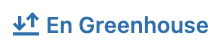
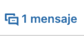
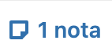
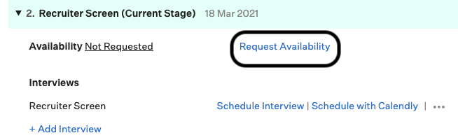
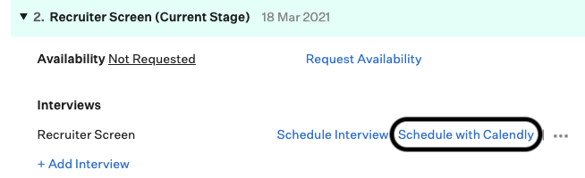
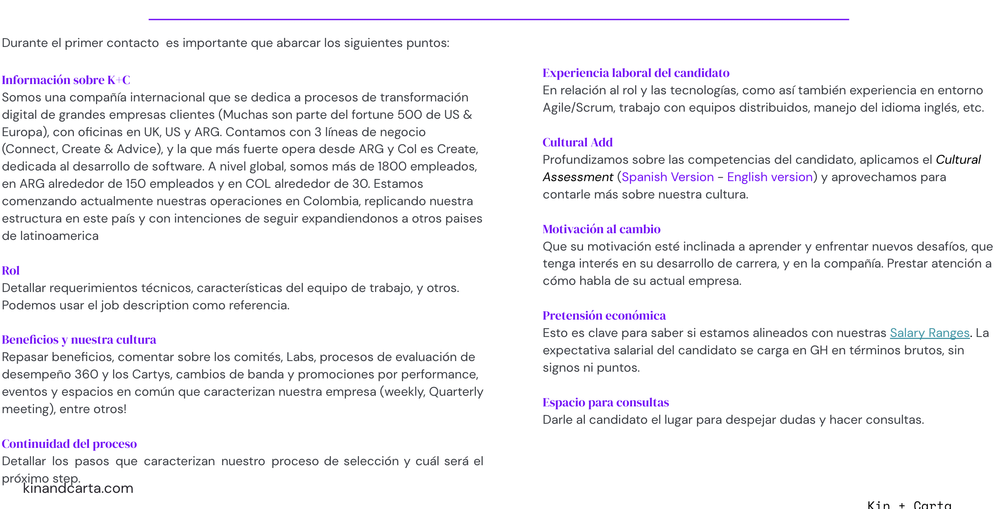

Sourcing
Además de los ‘applicants’ que recibimos por medio de nuestra Career Page y LinkedIn que se ven replicados en Green House, tenemos otras 3 fuentes principales de ingreso de candidatos a nuestra pipeline:
Tenemos un bono de USD 400, 600 u 800 (dependiendo el seniority) a cobrar a los 90 días del ingreso. Este bono aplica para todas las posiciones.
Todas las semanas enviamos un recordatorio por el channel de anuncios en Slack para recordar las necesidades que tenemos y promover que carguen sus referidos en Greenhouse y hacemos un recordatorio en la weekly.
Tenemos contacto con Universidades para participar en ferias de empleos.
También organizamos ‘Meetups’ y fuimos sponsors. Esto lo llevamos adelante con la colaboración del equipo de Engineers, Marketing y OX. Tenemos un channel ta-ba-marketing compartido con Marketing para éstas iniciativas.
Tenemos la cuenta de LinkedIn Recruiter, que te permite hacer ‘head hunting’ de candidatos.
Gise te va a estar generando tu cuenta asociando tu mail de Kin + Carta con tu linkedin. Automáticamente tu cuenta standar pasará a ser una cuenta premium y tendrás acceso a la función de LinkedIn Recruiter.
LinkedIn Recruiter
LinkedIn es la plataforma de sourcing por excelencia, y en K+C todos los recruiters/sourcers contamos con licencia de Recruiter. Vamos a repasar algunas funciones de Linkedin Recruiter y el paso a paso para comenzar a sourcear.
Proyectos
Al hacer click en ‘’Crear Proyecto’’ te da la posibilidad de crear carpetas para guardar a los candidatos ‘sourceados’ alineados a alguna posición.
Tenemos que:
- Escribir el título del proyecto (nombre del rol que vas a sourcear seguido de tu nombre)
- Ponerlo en modo publico
Sourcing
Una vez creado el proyecto, al hacer click en ‘Base de datos de candidatos’ vamos a ver distintas posibilidades de filtros avanzados y booleans. Solemos utilizar los siguientes:
- Cargos: Nombre del rol a sourcear y posibles sinonimos
- Ubicacion: Argentina y Colombia
- Aptitudes y validaciones: Skills que buscamos que el candidato tenga
- AND
- OR
- NOT
- "Palabras compuestas"
- (Palabra)
Posts
En este caso, los post no los manejamos nosotros, sino que se publican de forma automática ya que está linkeado con nuestra career page y greenhouse.
Channels interesantes
Curso gratuito sobre como utilizar LinkedIn Recruiter
Sourcing best practices
Spotlights y Actividad
En la lista de candidatos filtrados nos aparecen algunas características que tenemos que tener en cuenta antes de contactarlos:

Significa que el candidato se encuentra en nuestro ATS por lo que debemos ingresar y verificar como fue sus antecedentes en nuestro pipeline (Rejection reasons, scorecards, etc)

Significa que el candidato ya fue contactado anteriormente. Podemos verificar el estado del mensaje

Avisos importantes de algún miembro del equipo que ya lo haya contactado.
Ejemplo de mensaje para primer contacto
Hi {Name},
Mi nombre es {Name} y te escribo de Kin + Carta ya que actualmente nos encontramos en la búsqueda de un {Job Title} con inglés avanzado para formar parte de nuestro equipo y participar en proyectos muy desafiantes.
Te comento que somos una empresa dedicada a procesos de transformación digital y al desarrollo de Software Web y Mobile, y trabajamos con equipos globales distribuidos entre nuestras oficinas de UK, USA, Argentina y Colombia, siempre priorizando las buenas prácticas en desarrollo: Scrum, XP, TDD, CxDD y CI/CD.
Estuve revisando tu perfil y creo podrías ser un gran fit dada tu experiencia!
Nuestra propuesta de valor incluye:
- 💻 Trabajo 100% remoto
- 💬 Clases de inglés
- 🏥 Prepaga de primer nivel
- 🌴 15 días hábiles de vacaciones
- 📚 Training budget
- 📶 Reembolso de WiFi
- 🍴Cupón de alimentos mensual
- 💵 Percibir el 100% de tu sueldo neto en dolares (solo para Argentina)
Si te interesa lo que te comento podemos coordinar un breve espacio para comentarte más sobre nosotros, y conversar sobre tus expectativas de carrera.
Muchas gracias! SaludosComo coordino una Recruiter Screen?
Opcion 1
Se envía un mail con un link desde la opción: Request availability, donde los candidatos cargan su disponibilidad y se coordina manualmente en la opción: Schedule interview en tu calendario. Luego tenés que enviarles un mail confirmando fecha y hora de la entrevista + el link de Zoom para que puedan sumarse.
Opcion 2
Para esta opción tu cuenta de Greenhouse debe estar integrada con tu cuenta de Calendly. Una vez que la conexión está hecha se envía un mail a través de la opción: Schedule with Calendly. En esta modalidad los candidatos podrán autogestionarse y seleccionar un horario dentro del calendario enviado. En este caso no es necesario ningún paso adicional ya que la meeting quedará agendada automáticamente en tu calendar y en el del candidato.
Interview process
El proceso detallado a continuacion es un proceso generico. Dependiendo la posicion que se este buscando las etapas del proceso pueden variar. Para mayor informacion sobre el proceso de una determinada posicion te recomiendo que ingreses aqui
Recruiter Screen
Desde Talent Acquisition nos reunimos con el candidato para compartirle más informacion acerca de la empresa, posicion y propuesta de valor (beneficios y desarrollo de carrera). Es importante en esta instancia validar que la experiencia del candidato este alineada para con los requisitos de la busqueda, como asi tambien su nivel de ingles y pretension salarial.
Más info
Assesment
Dependiendo la posicion y seniority del candidato puede llegar a agregarse una etapa adicional de code challenge / ejercicio tecnico
Round 1 (Technical Interview)
Es el primer contacto que el candidato tiene con personas del area para el cual esta siendo entrevistado. Dependiendo la busqueda que se este llevando a cabo, los entrevistadores tecnicos podran ser de LatAm o de US
Round 2 (Final Interview)
El referente de la disciplina es quien se encarga de tomar esta instancia. Dependiendo la practica, puede participar en esta instancia algun miembro de la disciplina a modo de entrevistador tecnico.
Proceso de Oferta
Una vez que el perfil en Greenhouse tenga todos los scorecards completas, se lo pasa al stage Hiring Lead Approval y se da aviso a Gise confirmando expectativa salarial en la pestaña de “Private”. En esta instancia, junto con el Hiring Manager de la posicion en cuestion, debemos determinar el salario que se le ofrecera al candidato dado el seniority con el cual se lo alineo al finalizar el proceso. Es importante velar por la estructura interna.
Como crear una Offer en Greenhouse
Una vez que la Offer paso los tres estadios de aprobacion necesarios, estamos en condiciones de poder extendersela al candidato.
Guia para extender una Offer
Formas de hacer una Offer Letter
Opcion manual
Debemos crear una copia de alguno de los siguientes archivos ( Argentina / Colombia ), modificando las partes resaltadas en amarillo, segun la oferta del candidato. Debemos subir el documento a Green House ("update offer") para continuar con el proceso.
Opcion automatica
Se realiza directamente desde Green House la creacion de la Offer Letter. Debemos presionar en "Generate with Green House". Es recomendable doble chequear que se haya generado bien la oferta, por lo cual descargamos el PDF y revisamos que esten correctos todos los datos
Para enviar la oferta a través de Greenhouse clickeamos en "send with greenhouse" y seleccionamos el template correspondiente para Argentina o Colombia. Haciendo esto se crea automaticamente el cuerpo del email y se adjunta la Offer Letter como PDF.
Candidate's onboarding
Durante las dos primeras semanas del 'New Hire’, todas las áreas participan del proceso de onboarding. Kasey Bot se encarga de organizar los ‘invites’ en el calendario de onboarding, y el nuevo KIN va teniendo ‘meetings’ con representantes de cada area para conocer más en profundidad cada una de ellas.
Talent Acquisition Check In
Durante el primer día del NEW KIN, tenemos un espacio con ellos para darles la bienvenida, ponernos a disposición ante cualquier duda y aprovechar a despejar consultas. Si aún no lo hicimos, podemos utilizar ese espacio para enviarle el contrato.
Debemos agendarnos un espacio durante la primer semana, preferentemente los primeros días.
Talent Acquisition Check In
Hola (new hire)!
En esta sesión vas a encontrarte conmigo, para responder a las preguntas que tengas en tus primeros días en Kin + Carta.
Traé todas las dudas, consultas e inquietudes que tengas.
Te voy a brindar el soporte que necesites!
Nos vemos! (Recruiter)

Proceso de ingreso
- Actualizar su perfil en Greenhouse marcandolo como "Hire"
- Cargar en el FY22 Start Report su ingreso. (Esta planilla se organiza por fecha de ingreso)
- Avisamos en el channel Talent Acquisition que el candidato acepto la oferta, la posicion y fecha en la que ingresa
- Enviar planilla de "Welcome info" al new hire para relevar datos personales necesarios de cara al ingreso (Argentina / Colombia)
- Completamos la planilla de LatAm New Hire Set Up con los datos personales del new hire
- Creamos una carpeta de Drive, en la cual desde Talent incluiremos: Offer firmada, contrato firmado, etc.
- El New Hire reside en Argentina e ingresa a una posicion billable? Creamos la carpeta acá
- El New Hire reside en Argentina e ingresa a una posicion NO billable? Creamos la carpeta acá
- El New Hire reside en Colombia e ingresa a una posicion billable? Creamos la carpeta acá
- El New Hire reside en Colombia e ingresa a una posicion NO billable? Creamos la carpeta acá
- Estudios medicos de ingreso:
- El New Hire reside en Argentina: Si reside dentro de CABA, debemos coordinarle el estudio en CEMIBA (Usuario: solstic2 / Pass: S892). Si reside en algun punto de Argentina que sea fuera de CABA, debemos enviar un email a gestion.clientes@tiano.com.ar y turnos@tiano.com.ar con los siguientes datos personales del New Hire: Nombre completo, DNI, Lugar de residencia, Disponibilidad, Tipo de examen: Examen medico preocupacional, y puesto. En ambos casos, debemos cargar el horario del turno en la planilla de LatAm New Hire Set Up
- El New Hire reside en Colombia: Se encarga la consultora BDO de gestionar los tramites medicos de ingreso
- Creamos el contrato (Argentina / Colombia) y se lo enviamos al New Hire a través de Docusign (User: talent.latam@kinandcarta.com / Pass: Lococh0n.2022) para que lo firme. (Los New Hires que sean de Colombia, primero al contrato lo va a firmar Bernardo Cardenas, nuestro representante legal en Colombia, y luego el New Hire)
- En caso de que el New Hire sea referido, debemos cargarlo en la siguiente planilla de referidos
Proceso de rejected
Debemos marcar en Greenhouse que el candidato declino nuestra oferta y seleccionar dentro de "Rejected reason" la razon por la cual el candidato no acepta la oferta.
Es importante tambien que completemos la siguiente planilla dejando asentado la decision del candidato, los motivos y la fecha en la cual nos rechazo